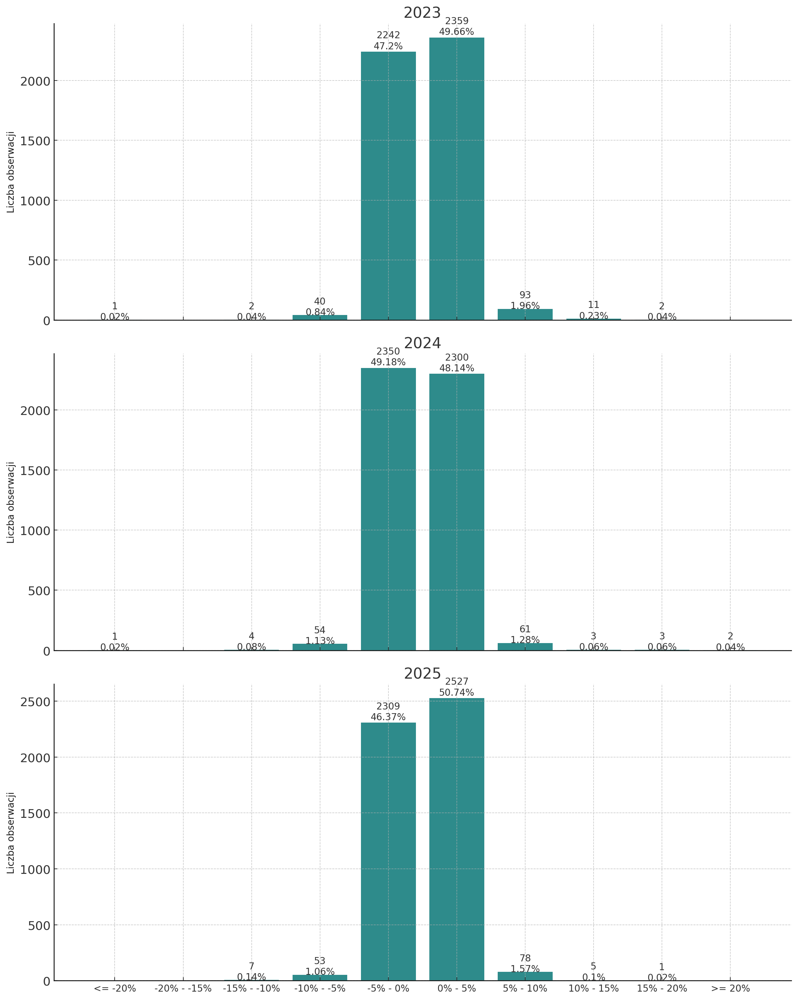
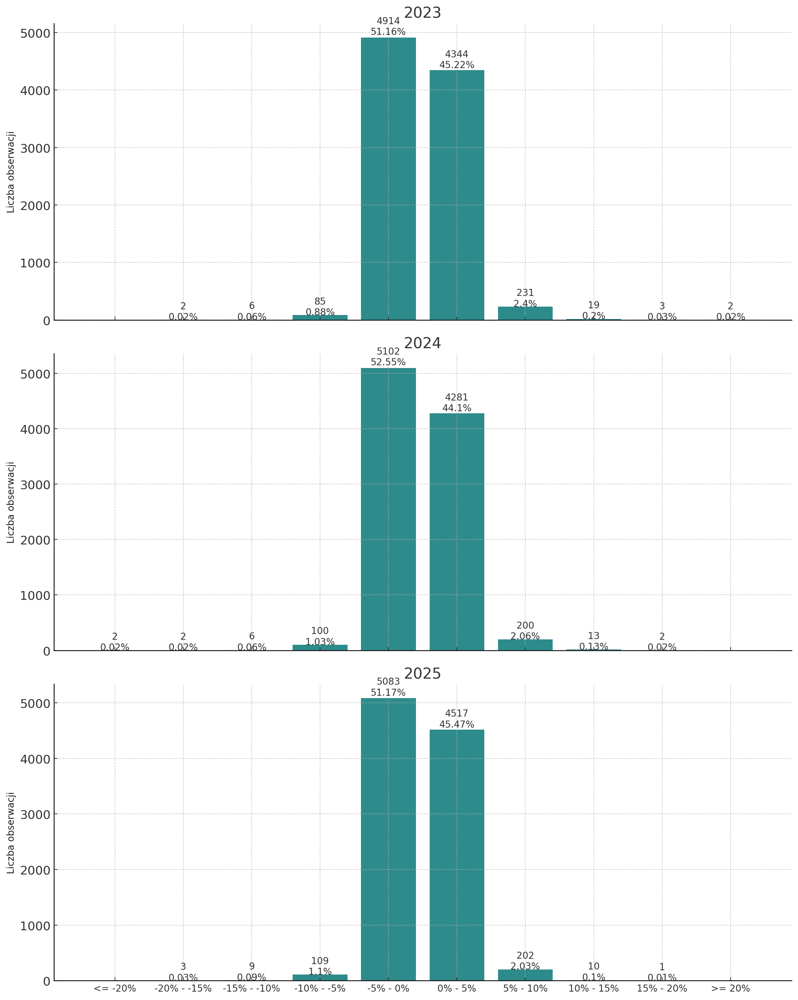
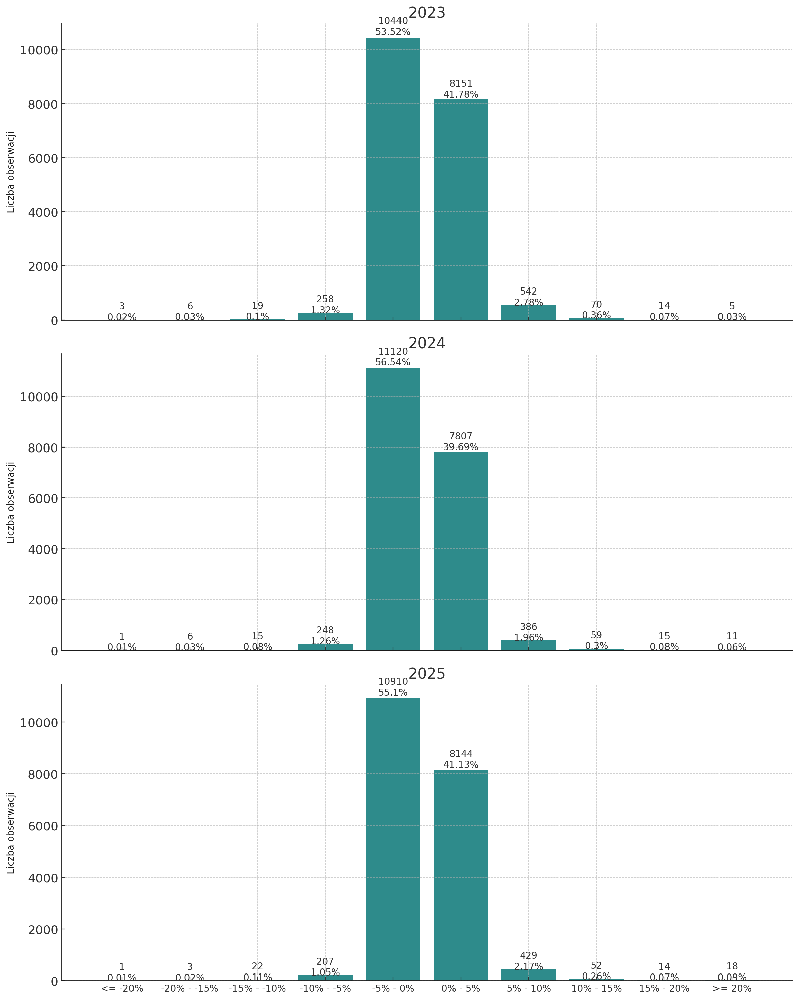
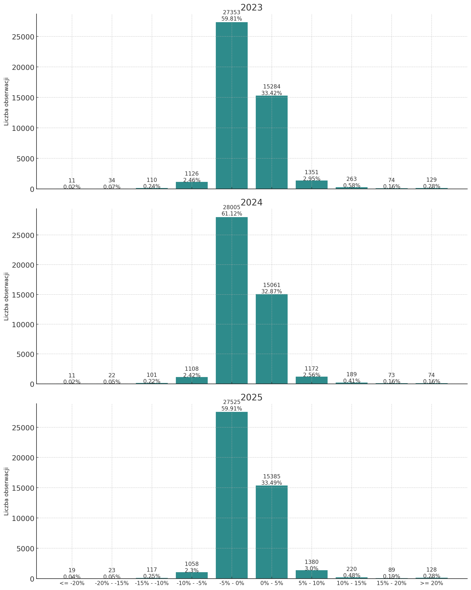
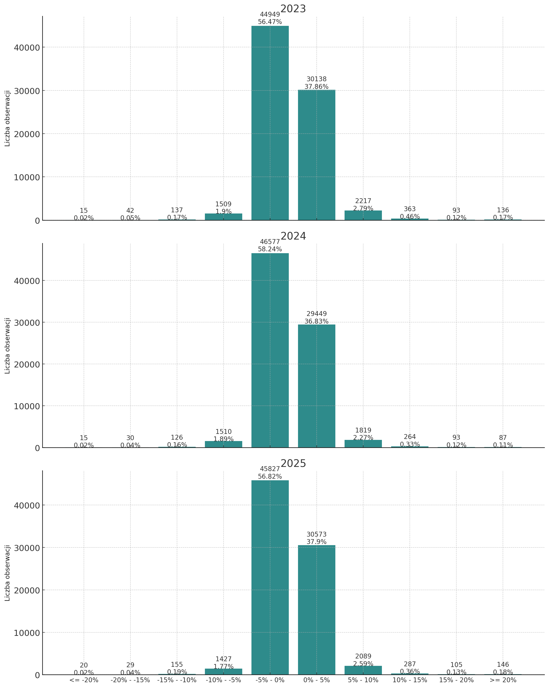
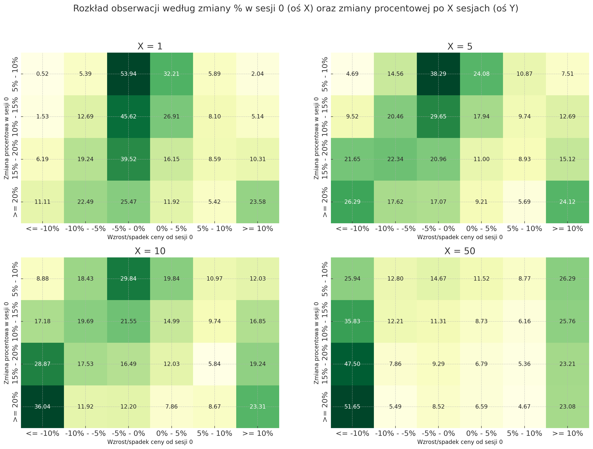
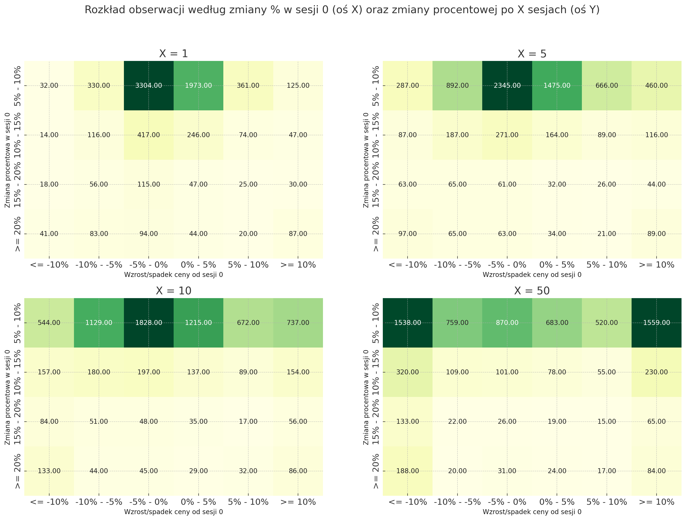
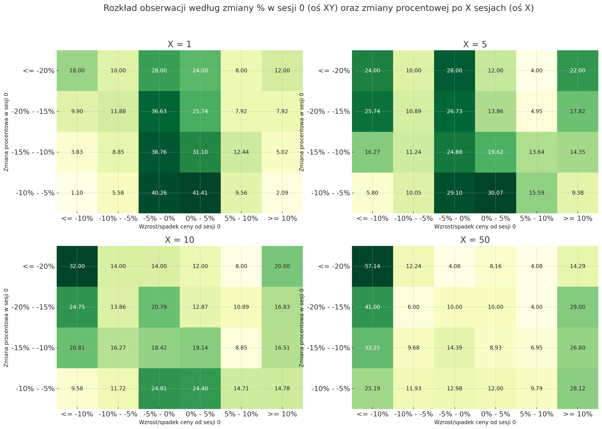
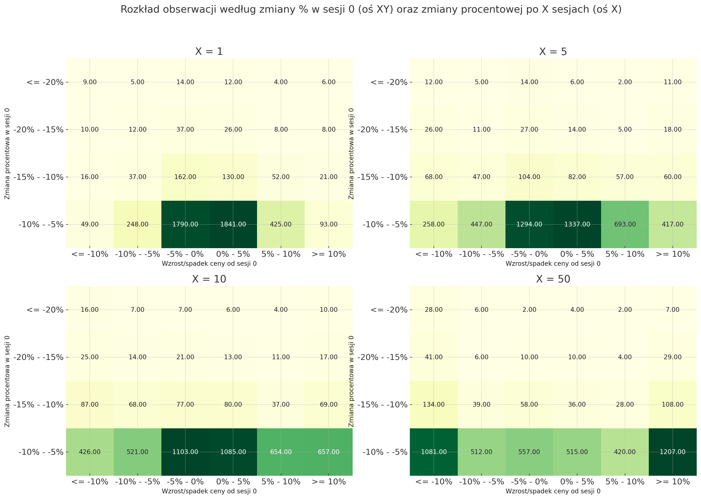

Ekstremalne sesje, niezależnie w którą stronę, wywołują gigantyczne emocje wśród inwestorów. Oglądając dynamiczny wzrost w trakcie jednej sesji w głowie mogą pojawiać się myśli o zrealizowaniu zysków, zaś mając przed sobą znaczne obsunięcie kapitału, zaczynamy się zastanawiać jak zapobiec dalszym stratom. Tego typu rozważania w niniejszym wpisie przełożę na liczby i zweryfikuję jak w perspektywie krótoterminowej (1,5,10 i 50 sesji od wystąpienia obserwacji ekstremalnej) radzą sobie kursy spółek.
Dzienne stopy zwrotu - przegląd danych historycznych
Analizę rozpoczyna krótka eksploracja dotychczasowych sesji za lata 2023-2025. W tej części dokonam weryfikacji jak rozkładały się stopy zwrotu z perspektywy indeksu oraz okresu, a także zbadam jaką częścią wszystkich obserwacji (czyt. dziennych stóp zwrotu wszystkich spółek indeksu WIG) były obserwacje ekstremalne - przekraczające plus/minus 5%.




Jak można łatwo zauważyć, niezależnie od indeksu i okresu, około 95% procent obserwacji to wartości oscylujące wokół -5% a +5%. Swoją drogą interesującym jest fakt, że niemal w każdym przypadku więcej jest sesji ujemnych, a jedynym wyjątkiem jest WIG20 w 2023 i 2025 roku.
Obserwacje brane pod uwagę w dalszej analizie:
| Liczba | Procent | |
|---|---|---|
| Rok | ||
| 2023 | 4512 | 5.68 |
| 2024 | 3944 | 4.94 |
| 2025 | 4258 | 5.28 |
Na kolejnych etapach analizie poddawane będą tylko te obserwacje ze zmianą o co najmniej 5% (in plus lub in minus). Zbiorowość ta stanowi około 5% wszystkich w skali każdego roku.
| strona | zmiana in minus | zmiana in plus | Razem |
|---|---|---|---|
| Rok | |||
| 2023 | 1703 | 2809 | 4512 |
| 2024 | 1681 | 2263 | 3944 |
| 2025 | 1631 | 2627 | 4258 |
| Razem | 5015 | 7699 | 12714 |
W tym miejscu warto zauważyć, iż historycznie, jeżeli wartość ekstremalna jest odnotowywana, to częściej jest to zmiana pozytywna. Proporcje w tej statystyce wynoszą 60:40 i tak z 12 718 obserwacji rozpatrywanych, 7703 to będą zmiany pozytywne, a 5015 to zmiany negatywne.
Zmiany pozytywne

Text(0.5, 0.98, 'Rozkład obserwacji według zmiany % w sesji 0 (oś X) oraz zmiany procentowej po X sesjach (oś Y)')
Już na pierwszy rzut oka widać, że istnieje spora dysproporcja w liczbie obserwacji ze wzrostem 5-10%, a pozostałymi. Dodatkowo, co można zauważyć na rozkładzie procentowym, wraz z upływem czasu (od X = 1 aż do X = 50), obserwacje zaczynają rozkładać się równomiernie. W pierwszej sesji od sesji wzrostowej 5-10%, stopy zwrotu w ponad 86% koncentrują się w przedziale od -5% do +5. Wraz z upływem czasu obserwacje ‘przepływają’ w kierunku bardziej skrajnych grup (zarówno in plus, jak i in minus), w taki sposób że po 50 sesjach po 25% całości rośnie/spada o 10% względem sesji 0. Podobnie zachowują się odczyty z kolejnej grupy, 5-10%.
Zdecydowanie ciekawiej wygląda zachowanie obserwacji z wyższych grup, choć od razu należy zaznaczyć że nominalnie jest ich istotnie mało. W przypadku odczytów powyżej +20% w trakcie jednej sesji, w przypadku aż 65.66% obserwacji, po 50 sesjach cena znajdowała się poniżej ceny z sesji zero (i co ważne w aż 51.65% przypadków ta cena spadała o ponad 10%).
Drugą istotną obserwacją jest fakt, że w przypadku wzrostów o ponad 20%, wielkość grupy spółek, które następnie rosną o ponad 10% jest mniej więcej stała w czasie - niezależnie czy mówimy o 1., 5., 10. czy 50. sesji, stanowi ona około 23% tej zbiorowości. Zweryfikowałem jednak, że skład tej grupy podlega dość sporym rotacjom. Istnieje 87 obserwacji, które odnotowały wzrost o ponad 20%, a po kolejnej sesji były o co najmniej 10% wyżej. Z tej grupy, jeśli chodzi o perspektywę 50-sesyjną, utrzymały sie tylko 33 obserwacje.
Zmiany negatywne

Text(0.5, 0.98, 'Rozkład obserwacji według zmiany % w sesji 0 (oś XY) oraz zmiany procentowej po X sesjach (oś X)')
Jeżeli chodzi o zmiany negatywne, kwestia rozkładów wygląda analogicznie jak w poprzedniej sekcji. Nominalnie dominują bardzo wyraźnie sesje spadkowe w przedziale -5 do -10% i z czasem obserwacje w tej grupie przepływają na dwie strony rozkładu w podobnych proporcjach. Sytuacja powtarza się także w przypadku obserwacji spadkowych zaklasyfikowanych do grup -10 - -15% oraz -15 - -20%.
Co do spadków powyżej 20%, w aż 57% przypadków po 50 sesjach spółki są niżej o kolejne (co najmniej) 10% od ceny zamknięcia z sesji 0. Statystyka wygląda jak alarmująco, jednak musimy pamiętać o niewielkiej skali występowania tego typu sytuacji. Na wspomniane 57% składa się jedynie 28 obserwacji z lat 2023-2025.
Na zakończenie
Dane historyczne jasno wskazują, że poza zakres +/- 5% w skali sesji wykracza jedynie 5% przypadków jeśli mowa o spółkach indeksu WIG w ostatnich 3 latach. W przypadku wyodrębnionych w toku analizy zmian o 10/15/20% widać, że wraz z upływem czasu wyniki równomiernie przepływają do skrajnych stron rozkładu i ma to miejsce zarówno przy wzrostach, jak i spadkach tej skali, co sugeruje że tego typu anomalie nie są decydujące dla trendu w kolejnych sesjach.
Wyjątkiem okazały się zmiany o ponad 20% (in plus oraz in minus). W przypadku wzrostów, upływający czas najczęściej działał niekorzystnie i ponad połowa takich pozycji po 50 sesjach traciła ponad 10%. Podobnie wygląda sprawa sesji spadkowych - spadki o ponad 20%, w 57,14% po kolejnych 50 sesjach kończyły się dalszym spadkiem ceny o co najmniej 10%.
Historia notowań z ostatnich nie przygotowała jednoznacznej odpowiedzi na to jak zachować się w przypadku ekstremalnych sesji. Nawet przy wspomnianych 57% spółek spadających po 50 sesjach o co najmniej 10% należy pamiętać o grupie spółek rosnących o 10% lub więcej (14,29%). Zaprezentowane podsumowanie notowań prowadzi jednak do przemyślenia, że kwestia anomalii nie powinna być czynnikiem decydującym o ruchach na rynku, a te powinny być rozważane przez pryzmat zmian w fundamentalnych założeniach.